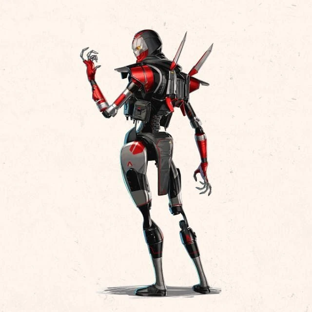

DISCOVER THE LEGENDS OF THE APEX GAMES
Legends are the playable characters of Apex Legends and Apex Legends Mobile, each different from the other due to their abilities, playstyle, personality, and backstory. A new legend is typically introduced at the beginning of a Season.
Hm... Son, you think you've got what it takes? They call us Apex Legends. But not all Legends are heroes. Each fight for their own reasons. From the ashes of war, Legends are born. They are icons of strength, power. Outside the ring, they're champions. Inside, they're equals. But the goal remains the same, become an Apex Legend. I say it's a sport of survival. You ask me? It's simple, eh. They kill you, they're better. You kill them, you're better.ASSAULT LEGENDS
Assault Legends are those with abilities useful in the middle of combat. Their class perk allows them to open the secret compartment in Weapon Supply Bins, which always contains attachments. They can also carry more ammo in a single inventory slot.
Bangalore
Anita "Bangalore" Williams has been an exceptional soldier her whole life. Born into a military family where she, her parents, and her four older brothers all served with the IMC, she is dedicated to the cause and graduated top of her class at the IMC Military Academy. She was the only cadet who could take apart a Peacekeeper, equip it with a Precision Choke Precision Choke hop-up, and put it back together in under twenty seconds - blindfolded.
When the Frontier Militia attacked the IMC at the Battle of Gridiron, Bangalore was injured by a Militia Pilot and nearly lost her life. She narrowly survived when her commanding officer - her own brother, Jackson - used an experimental device to power their ship's Jump Drive and escape the system. They crashed hundreds of light-years away on the planet Gaea. The surviving crew, including Anita and Jackson, built a settlement on the islands of New Antilla. Shortly after, Anita and Jackson left to begin their own quest back home - or so she thought.
A few years later, a bomb on the outer hull blew out a chunk of their new ship. Anita watched helplessly as Jackson was sucked out into the vacuum of space. After crashing on the Syndicate planet Solace, Anita looked for both work and the brother she refused to leave for dead. She had a single-minded goal: get them both on a ship and begin the decades-long trip back home.
She started fighting in the Apex Games in the hopes of earning the money and finding a pilot willing to make the trip back to Gridiron. Just when it looked like she would give up on Jackson and make the trip alone, she was ecstatic to find Jackson alive - and horrified to find that he'd been hiding from her, living a double life as a small-town hero called Newcastle. She's finally found the brother she lost all those years ago - but her carefully laid plans are no more, and for the first time in her carefully planned life, she's truly in uncharted territory. Perhaps she can find some stability in a group of outlaws, soldiers, misfits, and misanthropes she's been getting to know...
Bangalore
Fuse
Ladies’ man, man’s man, and all-round manly man, Fuse is a laid-back explosives enthusiast who’s covered in things that go BOOM. He may lack a plan, but he doesn't lack confidence. He grew up on Salvo - a brutal planet ruled by a rotating coalition of misfit warlords bent on mayhem, murder, and good times. For most of his life, he worked as a mercenary alongside his childhood friend, Maggie. But while she aspired to become one of Salvo's most powerful warlords, Fuse felt the pull of the arena.
Fuse found his calling late in life fighting in Salvo's bloodsport: the Bonecage. He proved to be the best, most charismatic and beloved gladiator on the planet. But he itched to join the grandest stage of them all: the Apex Games. While Salvo remained a part of Independent Space that dream was impossible, but once they joined the Syndicate, his chance arrived, and he seized it.
He knew Maggie - fiercely devoted to Salvo - would take the news poorly, but he didn't predict how poorly. When he confronted her with his choice to leave their home and join the Games, the resulting scuffle cost Fuse his arm. That clash began a rampage as Maggie, intent on proving the Syndicate was too weak to rule over her home, sabotaged his entrance into the Games to make a statement. Fuse's response? Don't threaten him with a good time - and that is a creed that he's lived ever since.
Fuse
Ash
Born in the unforgiving Frontier, Dr. Ashleigh Reid - still very much a human - learned early that the only person who was going to look out for her was herself. A humble lab assistant by day, she spent her nights in underground fighting rings, drug dens, and in the company of mercenaries. Over time, she learned the joys of psychological warfare: if she could break an opponent mentally, the battle was won before she even lifted a finger.
One day, she was hired by a mercenary group for a delicate job: steal an experimental fuel source being researched in the Outlands city of Olympus. It was the perfect job for Reid, who infiltrated and psychologically manipulated the researchers for years. She almost got what she wanted, but at the last moment, the researchers sacrificed themselves to destroy the lab. When it collapsed, Reid died with it... and didn't.
Her brain was put in a simulacrum shell, but in the process, she lost years of memories, and the trauma of her "death" caused her personality to fracture. Ash is the embodiment of the cold, perfectionistic, power-hungry side of Dr. Reid. After an encounter with Horizon overrides Ash's simulacrum programming, the framework that kept the vulnerable - yet intelligent - Leigh personality dormant has begun to crack. Ash joins the Games to prove she has transcended all humanity. Leigh's determined to prove her wrong.
Ash

Mad Maggie
Margaret Kōhere - the woman who would one day be known as Mad Maggie - grew up in one of the dustiest, dullest corners of Salvo without any family to speak of. She was fortunate, then, to meet a kindred chaotic spirit: an adventurous young boy named Walter Fitzroy. The two were inseparable, and in their teenage years, they became mercenaries. Eventually this duo grew into the Cracked Talon - a powerful mercenary operation. It was here she earned her nom de guerre: Mad Maggie. But when rival warlord Sandringham Kelly signed a treaty with the Syndicate, Maggie’s hopes for an independent Salvo were ruined, and Fuse abandoned her for the Games, leaving Maggie very mad indeed…
By sabotaging Fuse’s entrance into the Apex games, Maggie planned to expose how weak the Syndicate was, in hopes it would spark rebellion on Salvo. Fuse would assemble a team to take down Maggie… only for the pair to have a heart to heart where they came to accept each other’s choices: Fuse will always follow the fun, and Maggie will always follow the cause.
It seemed as though Maggie fell to her death after that exchange...But she was apprehended by the Syndicate, and sentenced to fight to the death in the Apex Games. So she will: just not hers.
Mad Maggie
Ballistic
August was the sole heir to the Brinkman fortune, built on shady backroom deals. But when those deals caught up with his parents, August was left a billionaire orphan. Wealthy, furious and self-destructive, August joined the Thunderdome Games (the pre-Apex Apex Games). Here, he took the name Ballistic and became a sensation! His style was wild, reckless, and utterly selfish, helping him become the very first Thunderdome celebrity.
He was famed for his iconic CAR (“Lady Grey”, for the tea). It was here, in combat, that August would meet the love of his life, Sok Leng. They would quickly marry and have a son, Nathaniel. Sok Leng and her brother Kit Siang were an inseparable duo of destruction, and with August now in their squad, they seemed unstoppable.
But nothing lasts forever. August’s crowd-pandering combat style meant he wasn’t paying attention to his team when they needed him, leading to Kit Siang’s death. Devastated by guilt, August retreated into himself, driving away his wife and son. For nearly two decades, August lived as a recluse, keeping busy with small tasks to distract a lonely mind. And so August was largely forgotten, though not by everyone. His son, Nathaniel, was both enamored with his father’s victories and determined to surpass them. When his son qualified to join the dangerous Apex Games, August went to the Syndicate with an offer: take me instead.
His son would be safe from the path that ruined him. What better way to use those skills than in selfless service? And if it just so happens to be his favorite activity, killing all who stand against him…That’s quite the fortunate coincidence.
Ballistic

SKIRMISHER LEGENDS
Skirmisher Legends are those with abilities that help to get in and out of fights with ease. Their class perk allows them to see the contents of a Care Package from a distance, and if the Care Package has already been looted, they can see what was taken from it.
Pathfinder
Pathfinder is the picture of optimism, despite his circumstances. A MRVN (Mobile Robotic Versatile eNtity) with a talent for location scouting and surveying, he booted up decades ago in an abandoned warehouse with no idea who created him or why. With only his MRVN designation to hint at his identity, Pathfinder eventually set off in search of his creator.
Pathfinder has learned much in his travels since then - that he was created by a group of scientists trying to save the Outlands from an energy crisis; how he was the only one to survive when their lab exploded; that he delivered the special element that achieved his creators' dream; how to make a mean Eastern Leviathan Stew. But his most important discovery was that some of his spare parts were used to build another machine... a child of his own, out there somewhere.
He originally joined the Apex Games to gain a following and draw the attention of his maker, but now he aims to draw the attention of anyone who might know about his child. In the meantime, he remains enthusiastic and helpful, always ready to make new friends (then shoot them).
Pathfinder
Wraith
Wraith is a whirlwind fighter, able to execute deadly attacks and manipulate spacetime by opening rifts in the fabric of reality — but those abilities came at a price. Years ago, she woke up in an IMC detention facility with no memory of who she was. Senior Science Pilot Renee Blasey, who volunteered as guinea pig for her own experiments... whose partner betrayed her and locked her away… no longer existed. All that was left was a timid girl, frightened by a cacophony of voices in her head, until another version of herself appeared and taught her to listen to the voices. Following her lead, Wraith found the strength to break free from her prison and escape into a different reality - this reality.
Finally free, but still robbed of her memories, Wraith continues her quest to learn more about who she was before the experiments. With so many of the Apex Games held on old IMC bases, Wraith now competes so she can access the mysterious facilities and continue to learn more about who she was. She remains a fixture of the Apex Games, and with every match she gets closer to the truth, even if she sometimes feels scared to find out more about who she used to be..
Wraith
Octane
One day, Octavio Silva was bored. In fact, he was bored most days. Son of the preoccupied CEO of Silva Pharmaceuticals, he wanted for nothing in life and entertained himself by performing death-defying stunts and posting holovids for his fans to gawk over. On this day, he decided to set the course record for a nearby Gauntlet by launching himself across the finish line – using a grenade.
As he lay in triage hours later, the doctors informed him that the damage done to his legs meant his daredevil days were over. That didn’t sit well with Octavio, who turned to an old friend for help: Ajay Che, who he guilted into forging an order to replace his legs with bionic ones. Suddenly able to repair his limbs at a moment’s notice, Octavio decided petty online stunts weren’t enough: the ultimate adrenaline rush, the Apex Games, was calling.
Since then, Octane's world has gotten a little more complicated - his CEO father is now head of the Syndicate and, by extension, the Apex Games. Also, he may be plotting something pretty bad behind the scenes, and is maybe kind of not Octane's real dad? But that's just boring in a different, more uncomfortable way! Nothing matters more to Octane than becoming an Apex Champion by doing the most incredible, death-defying moves anyone's ever seen. In the ring, his problems can't catch him - he's too fast.
Octane
Revenant
Revenant used to be human. He used to be the greatest hitman the Mercenary Syndicate ever had. He used to look in the mirror and see his human face looking back. But time changes everything, and when his programming finally failed, he saw what he had become at the hands of the Mercenary Syndicate and Hammond Robotics: a walking nightmare of steel and vestigial flesh. His masters resurrected him as a simulacrum, snatching him from death’s embrace again and again and programming him to forget.
He hunted down every last person who did this to him, but the last thing he wanted, he couldn't have: the sweet release of death. Unable to die without destroying his preserved human head, he was on the hunt to find and deal with it. When Loba, a thief whose parents he'd murdered, came for her revenge, he nearly got what he wanted—but she kept him alive so he would continue to suffer. Then his world unraveled again when he woke up with his abilities torn from him and replaced with new ones. Now who's messing with him–and why? Revenant won’t stop until he finds out.
Revenant

Horizon
Almost a century ago, the Outlands were dangling on the edge of a cataclysmic energy crisis. Dr. Mary Somers, a charmingly eccentric astrophysicist, was hired to find a solution. Mary moved her family to the scientific research station on Olympus and set to work. With the help of her apprentice, Dr. Reid, Mary discovered Branthium - an element she was convinced could be the key to limitless energy. But Branthium can be found only on the accretion disk of a black hole, so Mary and Dr. Reid departed on a dangerous mission to prove her theory right.
Mary promised her son Newton she’d return safe and sound. But Dr. Reid betrayed her, stealing the Branthium and sending her shuttle into the black hole’s orbit. Using her wits, Mary modified her robotic vacuum companion N.E.W.T. to escape. But time moves differently on the outskirts of a black hole, and she was 87 years too late.
From that day on, she had one goal: to find a way to get back to her son. She joined the Apex Games as Horizon, master of gravity, to fund her research on time distortion and fluctuation. Her first foray into the Games was on Olympus, where her old life once was and where she had promised to return. That wasn't the only part of her old life that found her again - a certain research assistant, older and now much more metallic, has darkened Dr. Somers' door.
Horizon

Valkyrie
Bold, brash, fiery and fierce, Kairi Imahara isn’t above greasing palms and bending the law. When she was a child, she stole a Titan. It belonged to her dad, a mercenary and former Apex Predator named Viper. She wanted to be just like him when she grew up. But the next day he left on a mission and never returned.
In some ways, she still followed in his footsteps: it wasn't a Titan, but her ship offered a decent, dubiously ethical living. During the day, she smuggled precious cargo, and at night, went shot for shot with the outlaws and mercs in the bars. But even though she had her ladies, her liquor, and her love of the sky, she was still obsessed with finding the man who’d put her father in harm’s way: his commander, Kuben Blisk.
She tracked Blisk down to the Outlands, prepared to kill him. But he spoke of her father with respect, and challenged her to be better. She shot him anyway.
...but not to kill. Knowing she could get to him was enough. Well, that, and the Apex Games card she took from Blisk’s grasp served as a decent enough trophy. Using the intact flight core from Viper’s Northstar, she built a sleek new jetpack that honored her father’s memory. And that was when Kairi could finally soar on her own, and in a version of her dad’s Titan, that ended up being hers after all.
Valkyrie
RECON LEGENDS
Recon Legends are those with abilities for scouting and gathering enemy intel. Their class perk allows them to interact with Survey Beacons to reveal enemy positions on the minimap for 30 seconds.
Bloodhound
Bloodhound is known across the Outlands as one of the greatest game hunters the Frontier has ever seen. The child of two engineers stationed at the New Dawn industrial plant on Talos, Bloodhound was taken in by their uncle Artur after a meltdown destroyed the facility and killed both their parents. Artur taught them the Old Ways, a belief system that focuses on the glory of nature and rejects modern technology. Yet Bloodhound was constantly drawn to technological marvels, and ultimately used both new and old methods to take down a Goliath that preyed on the people of their village, forever changing their life’s path.
After Bloodhound’s lover was unceremoniously killed in the Thunderdome, they vowed to win enough battles that they could both enter Valhalla… and the Apex Games were the perfect place for Bloodhound to accumulate victories. Many things have changed since then - they have contended with their guilt over the loss of those they care for, led their people to a new home, and found new love - but they continue to find a place in the Games.
Their unparalleled tracking skills are a boon to any team they join, helping them root out hidden opponents and track enemy movements. Calling on Earth’s Old Norse Gods to guide them, Bloodhound believes that destiny is a path that has already been laid out, eventually carrying all to their death. But with that knowledge comes strength, because until that day comes, Bloodhound knows they can’t be stopped.
Bloodhound
Crypto
Crypto specializes in secrets. A brilliant hacker and encryption expert, he uses aerial drones to spy on his opponents in the Apex Arena without being seen. He also has a secret of his own: he joined the Apex Games to find the people who framed him for murder.
An orphan abandoned at a young age, Tae Joon escaped a life of squalor by becoming a computer engineer for the Mercenary Syndicate, along with his foster sister, Mila Alexander. One day, Tae Joon and Mila stumbled upon an algorithm that could predict the result of any Apex Games match, hidden away in the Games’ own computer systems. That caught the attention of the wrong people - the next day, Mila disappeared, and Tae Joon was forced to go into hiding after he was framed for her murder.
He’s now joined the Games to clear his name, because sometimes the spotlight is the best place to hide. Along the way, he's uncovered hints of a conspiracy greater than even he predicted - and maybe greater than he can conquer alone.
Crypto
Seer
Before his birth, it was foretold that Seer would bring pain and suffering to the world--and the night he was born, a meteor barreled across the sky and struck his world’s moon. It was considered a bad omen, and when the pale blue eyes of Obi Edolasim opened, his community saw a cursed child. His parents did not; they loved him unconditionally because they saw the true empathic, creative soul of their son. They even supported him when he was drawn to the theatricality of the Arenas - a series of underground fighting competitions - where he could express himself fully. What is a fight, if not an adversarial dance?
At first, the crowds felt unsure of him. But over time, with each victory, the power inside him grew, and with it, his strength in the Arena. And as his reputation began to precede him, a strange thing happened… The people in the crowd who were downtrodden, outcast, and forgotten—they saw themselves in Seer. Soon, throngs of people would come out just to see him fight—cheering Seer on as their champion.
This legend from the Arenas made his way to the Apex Games as an icon of the shunned, the unaccepted, and the unabashedly original. Still, there are those that continue to blame him for the deterioration of the moon of his homeworld Boreas for many reasons – his curse, his underwhelming aid to the people of Boreas, and now for bringing the Games to the moon. He fights on to make things right, however he can.
Seer
Vantage
Xiomara “Mara” Contreras was born and raised alone on the wild ice planet Págos by her survivalist mother, Xenia. Mara proved gifted with a sniper rifle from the moment she was big enough to look through the scope and reach the trigger at the same time. The tight-lipped Xenia could only get her chatty daughter to stop asking questions by giving her a scavenged copy of Encyclopedia Outlandica, which Mara memorized front to back.
When Mara was 18, she discovered the wreck of the G.D.S. Vantage. Inside, she found evidence of a shocking truth: years ago, her mother was brought to Págos aboard a prison transport ship. Disturbed by the intrusion, the ship collapsed into a crevasse, trapping a wounded Mara. By the time Xenia got to her daughter, the injuries were too severe for her to treat. To save her daughter’s life, Xenia set off the prison ship’s SOS beacon, but was imprisoned once more in return.
Once Mara had healed, she visited her mother in jail, promising to find a way to get her out. At a loss for what to do, unable to return to her planet, and unable to fit into society, Mara’s eye turned to the Apex Games. In it, she saw a situation she understood--survival--and a platform to draw public attention to Xenia’s case. So Mara took on the name Vantage and joined the Games to rally support for her mother - but how will a kid from an empty, frozen tundra fare under the heat of the spotlight?
Vantage
SUPPORT LEGENDS
Support Legends are those with abilities for protecting, reviving, or resupplying squadmates. Their class perk allows them to open the secret compartment in Extended Supply Bins, which always contains regen items or survival items. They also give their team the ability to use Replicators to craft respawn banner cards for their eliminated squadmates.
Gibraltar
Gibraltar is a gentle giant with a wild side. The son of two SARAS (Search and Rescue Association of Solace) volunteers, he has always been skilled at getting others out of dangerous situations that are common in the Outlands. However, he only began to understand the value of protecting others when he was a teenager: one day, he and his boyfriend stole his father’s motorcycle, took it on a joyride, and got trapped by a deadly mudslide. His parents saved them, and his father lost an arm in the process. Gibraltar has never forgotten that sacrifice and has devoted his life to helping those in need.
The Apex Games didn’t change that, but they changed what it meant. Many of Gibraltar’s friends and colleagues have competed in the Games for extra money, fame, and glory over the years, and some never came home. Gibraltar joined to keep them safe and, for the first time, his skills as a rescuer and his rebellious nature worked together. He’s now become an icon in the Apex Games, putting himself in the line of fire to protect his squad and send his opponents running for cover.
He's seen plenty in the Games - and out of them - to challenge his upbeat way of seeing things. Letting the love of his life take the fall for a mistake he made, only to meet him again and try to make amends. Watching his friends throw themselves into dangerous situations over and over again, and seeing ancient rivalries play out in painful ways. A few competitors have even tried to break his spirit for the fun of it. But Gibraltar is like a rock - they can TRY to move him, and he'll just smile and laugh.
Gibraltar
Lifeline
Ajay Che, aka Lifeline, isn’t someone you would expect to find in the Apex Games. The child of wealthy war profiteers, she left home when she learned of the damage her family had caused and enlisted in the Frontier Corps, a humanitarian organization that aids Frontier communities in need. She’s since devoted her life to helping others and joined the Apex Games to fund the Frontier Corps with her winnings.
Since no one in the Games is innocent — they all know what they signed up for — and every one of her victories means help for those in need, Lifeline has no problem engaging in the popular bloodsport. Or so she tells herself. She may seem sarcastic and callous, but deep down she wants to help people and make the world a better place. If that means taking a few people down in the process, so be it.
Lifeline

Mirage
Mirage is the kind of guy who likes to stand out. The youngest of four brothers, he perfected the art of fooling around to get attention. The one thing he took seriously was Holo-Pilot technology: introduced to the illusion-creating tech by his engineer mother, he poured over the mechanisms and learned all he could about them. Even when his brothers went MIA during the Outlands’ Civil War, Mirage and his mother continued to develop holo devices, and the work brought them closer.
While working as a bartender to make ends meet, Mirage heard amazing stories from his patrons about the Apex Games and the wealth and glory that came with victory. As good as both of those sounded, he knew he couldn’t risk leaving his mother childless – until she gave him a set of customized holo devices and told him to follow his dream. Mirage is now the life of the Apex Games, outwitting opponents and charming audiences across the Outlands, in front of cameras for the world - and his mother - to see.
Mirage
Loba
When Loba was nine, she looked on as simulacrum hitman Revenant killed her family. Left with nothing, Loba survived by picking pockets, using every tool at her disposal to lift herself from the gutter - including an experimental Jump Drive, pilfered from a supposedly impenetrable research facility. She was just that good.
With her new teleportation bracelet, the most secure and unattainable items were within Loba's reach, and so was her dream of living the high life. Rumors spread across the Outlands: if you wanted something valuable -and well guarded- Loba was your woman.
She was almost able to put her past behind her. But when Revenant joined the Games, her past catapulted into her future. Desperate to find a way to kill him, she sabotaged a facility full of Revenant bodies, bringing Skull Town and Thunderdome crashing down in the process. However, she learned it was just one of many such factories hidden across the Frontier. After finding out Revenant wishes for death, she’s made it her mission to keep him alive as revenge. She plays in the Games to keep getting vengeance on Revenant, but.it doesn’t hurt that the arenas are brimming with treasures just waiting to be plucked.
Loba
Newcastle
Lamont Craig wasn’t like other dads in the neighborhood. Sure, he dropped the kids off at school and acted out multiple voices every night for Story Time with his toddler. But Lamont had secrets—the first being his real name, Jackson Williams.
A top soldier for the IMC, Jackson went AWOL when he ignored direct orders to fight what he believed was a losing battle. He knew he would never be safe from the remnants of the IMC--and neither would his sister, Anita, as long as she was with him. So when he was presumed dead in a ship explosion, he used that opportunity to leave his life behind, even if it meant leaving her behind too.
Years later, "Lamont" moved to an idyllic little town called Harris Valley, where he fell in love and got married. Harris Valley was so peaceful that they didn’t need law enforcement. All they needed was their knight, Newcastle. But the knight had secrets of his own: Newcastle had sold off the town to pay off his debts, and thugs from a gang called the Forgotten Families came to collect. They killed Newcastle when he couldn’t pay, unaware that Lamont was watching. He defeated them using his military acumen, but the Forgotten Families had plenty of reinforcements.
So Lamont came up with a dangerous solution. With Newcastle’s armor, he could take on his identity and do what Newcastle could not: get into the Apex Games. With prize money like that, he could definitely pay off the debts. But not without the risk of being discovered by his little sister, the Apex Legend, Bangalore.
Newcastle
Conduit
On her rebuilt homeworld of Nexus, Rowenna Valentina Coffey Divina chose joy, her ever-present smile offering hope amidst the rubble of a government coup. There, the remnants of a fallen Monarch Titan became a symbol of sacrifice, inspiring heroic tales of Legends that Rowenna spun for her siblings. Her sense of humor would be her family’s shield against the harshness of reality, and a secret weapon in Rowenna’s own quest to be an Apex Legend.
But when tragedy struck her oldest sister Diwa, Rowenna took her family’s fate into her own hands. She snuck into the restricted battlefields, salvaging the Titan's radioactive battery. From it, Rowenna forged a combat rig, harnessing its lethal energy to fight in local tournaments. Every victory helped support her loved ones and brought her closer to becoming a Legend, but at a grave cost:
The battery’s fallout was slowly killing her.
It didn’t matter. To achieve her dream, it was a price Rowenna was ready to pay. Her success led neutral Nexus to its first invitation to the Apex Games, forcing a heated confrontation with Diwa, who recognized the armor’s fatal origin. But Rowenna had made her choice.
Now, as Conduit, she steps onto the battlefield. Equal parts fan and gladiator, fueled by the Monarch Titan's battery and her own quest to give her family a better life.
For Rowenna, an early death is inevitable, but right now–it’s Conduit’s chance for a day in the sun.
Conduit
CONTROLLER LEGENDS
Controller Legends are those with abilities that fortify a location or trap enemies. Their class perk allows them to interact with Ring Consoles to reveal where the Ring will shrink to next.
Caustic
Alexander Nox used to be one of the brightest scientists in the employ of Humbert Labs, the Frontier’s leading manufacturer of pesticide gases. Nox worked day and night developing new formulas for the glut of pesticides needed to protect the crops that sustained the Outlands. But he soon realized that progress was being hampered by his testing methods. He needed to test on more than just inert tissue: he needed living subjects.
As he toiled in secret, Nox began to see the beauty in his creations and their ability to destroy anything they touched. But the head of Humbert Labs soon discovered his gruesome experiments, and their confrontation ended with the lab in flames.
Now, competing under the name Caustic, he puts his gaseous creations to work in the Apex Games and observes their effects with great interest. However, as much as he's tried to leave his old self behind, the trappings of his former life are squeezing through the cracks. A cop obsessed with hunting him down; a loving mother who has discovered his death was faked; a bitter enemy revealed to be his half-brother; and an encroaching sickness he may no longer be able to evade. Who knows how long he will be able to avoid such confounding variables.
Caustic
Wattson
Natalie “Wattson” Paquette is a familiar face in the Apex Games, though for a different reason than most. Daughter of the Games’ lead electrical engineer, she studied his manuals to stay close to him, and discovered her calling at a young age. Though she could be completely distracted one moment and hyper-focused the next, electricity grounded her – its ordered, predictable flow made sense in a way the rest of the world didn’t.
She devoured every book she could on the subject, and eventually became such a skilled engineer that she was commissioned to build the Apex Games’ Modified Containment Ring. Unfortunately, her father died the day it was revealed, leaving her alone. At her lowest moment, a group of competitors invited her to return to the arena with them, assuring her she would always have a home. She now fights alongside her friends in the arena she helped build, destroying incoming missiles, recharging shields, creating fences, and using her pylon to silence fights that get too loud. Nobody knows the arena better than Wattson – anyone who underestimates her is in for a shock.
Wattson
Rampart
Rampart is a blue-collar, private business owner who just needs a big gun and a backpack full of scrap metal to get by in the dangerous, wild west world of the Outlands. Before opening her popular modding shop on Gaea, Ramya Parekh (Rampart for short) made a name for herself in the underground gauntlet circuit. Parekh climbed to the top showcasing pure skill using her custom-modded gear. She began taking jobs from smugglers, Syndicate members, and everyone in between. Some say it ain’t great unless it’s got “Rampart” written on it.
Parekh never shied away from letting people know how great she was, or better yet, how bad they were. Maybe that’s what led a group of assailants to ambush her at her shop one night. Her business burned down and she was left with nothing -- except an Apex Card. For Parekh, the Apex card is more than just an invitation to compete - it's a sign that she may have lost her shop, but she didn't lose what built it. Like her motto says, she's the kind of person who can always "turn crap into gold.”
Rampart
Catalyst
Tressa Crystal Smith isn’t everyone’s cup of tea–an elegant, standoffish woman, she likes crystals more than she likes most people. She grew up on Boreas, a faltering planet with a deteriorating moon. Conformity and efficiency were necessities there, but that never suited Tressa. Instead, she was more at home with fellow misfits who spent their time on crystal readings, moon rituals and personal witchery–they made her turbulent teenage years (and simultaneous gender transition) easier and less lonely. But when her closest friend went to extreme lengths to save their moon from corporate encroachment, Tressa was caught in the middle. Ultimately, she ran away from home, finding solace in the one place her friend cared about most: their moon, Cleo.
There she joined the terraforming crews hired to repair and rejuvenate the celestial body. She learned to work with ferrofluid, and use it with a certain witchy flair. She grew attached to her new community and, when the heat on Boreas died down, brought some of her old friends back into the fold. She found a place to call her own–just in time for the Apex Games to arrive and sweep it out from under her new family. But Catalyst won’t disappear so easily. If the Games are going to get in her way, she’s going to turn them to her advantage, putting the prize money to use supporting her family. She sees a win in her future, and she’ll rise to the occasion.
Catalyst